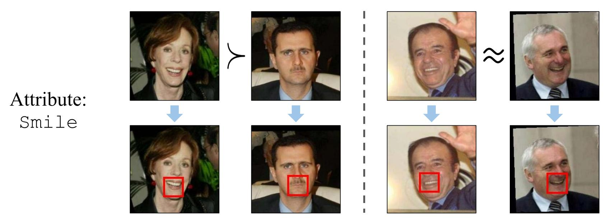
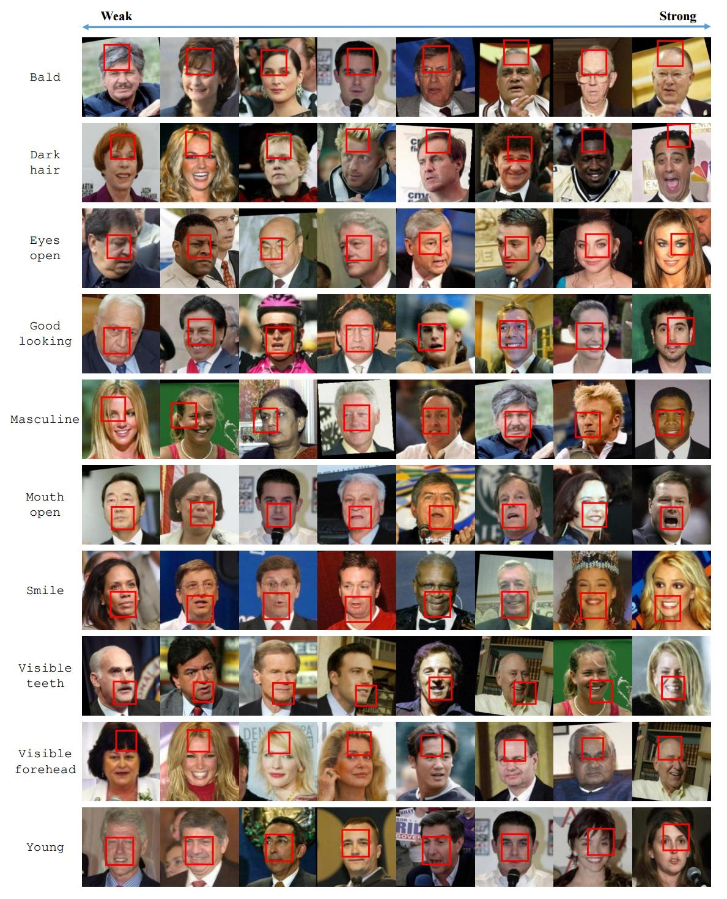
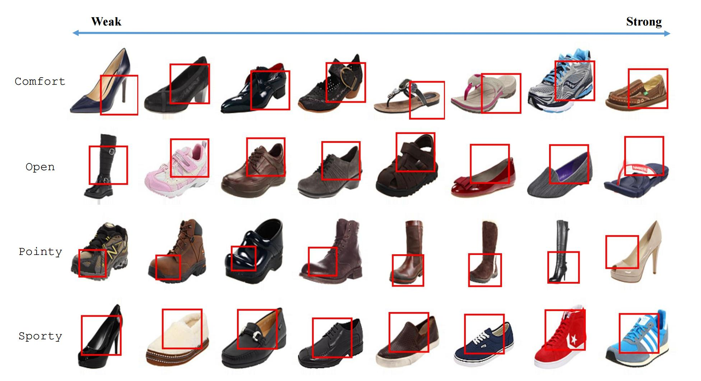

End-to-End Localization and Ranking for Relative Attributes

Given pairwise relative attribute strength comparisons (i.e., greater/less than (left) or similar (right)), our goal is to automatically localize the most informative image regions corresponding to the visual attribute. For example, the mouth region is the most informative for the attribute smile. To this end, we train an end-to-end network that discovers the image regions and uses them for relative attribute ranking.
In ECCV 2016
People
Abstract
We propose an end-to-end deep convolutional network to simultaneously localize and rank relative visual attributes, given only weakly-supervised pairwise image comparisons. Unlike previous methods, our network jointly learns the attribute’s features, localization, and ranker. The localization module of our network discovers the most informative image region for the attribute, which is then used by the ranking module to learn a ranking model of the attribute. Our end-to-end framework also significantly speeds up processing and is much faster than previous methods. We show state-of-the-art ranking results on various relative attribute datasets, and our qualitative localization results clearly demonstrate our network’s ability to learn meaningful image patches.
Paper
|
|
Additional Materials
Interesting Results

Qualitative results on LFW-10 test images. Each row corresponds to an attribute, with the images uniformly sampled according to predicted attribute strength. In each image, the STN localization is depicted in the red box. It corresponds to meaningful regions for each localizable attribute (e.g., top of the head for bald-head and dark-hair; forehead for visible-forehead; mouth for mouth-open, smile and visible-teeth; eyes for eyes-open). For more global attributes like goodlooking, masculine-looking, and young, there is no definite answer, but our method tends to focus on larger areas that encompass the eyes, nose, and mouth. Finally, the ranking obtained by our method is accurate for all attributes.

Qualitative results on UT-Zap50K-1 test images. The STN localizes the relevant image regions: toe end for pointy, heel for comfort, top opening for open, and area around the laces for sporty. Our method’s ranking is also accurate for each attribute.
Acknowledgments
This work was supported in part by an Amazon Web Services Education Research Grant and GPUs donated by NVIDIA.
Comments, questions to Krishna Kumar Singh